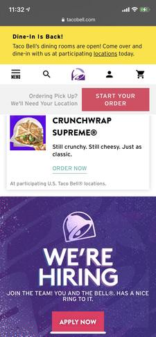
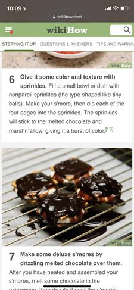

White Space and Clean Design
Medium
medium.comMedium.com uses white space and clean design in a powerful way. The whitespace around the text makes it easy and relaxing to find where the important things on the page are like words and buttons. I especially like this example as it shows that white space can be other colors too. There is clean design here closely related to the white space. Since there is ample white space, the design feels clean and not cluttered or distressing to look at. I feel good when I look at this page.
Contrast
Taco Bell
tacobell.com Tacobell.com uses contrast here to draw your attention to the fact that they are hiring. The white is very contrasted with the dark purple so that there is a clear attention grab and break in the action on the page. It is clear that they are not talking about the Crunchwrap Supreme and have moved on to talking about hiring. The contrast isn't too harsh to look at, but isn't too subtle to notice.
Repetition
Wikihow
Wikihow.com Wikihow.com makes good use of repetition. All the typography is consistent throughout, and the images are the same size and style so that it is easy for the viewre to anticipate where the information will be and how to find it. The colors are sonsistent with their various elements so it is pleasing to the eye. The use of numbers also helps the viewer through the use of repetition.